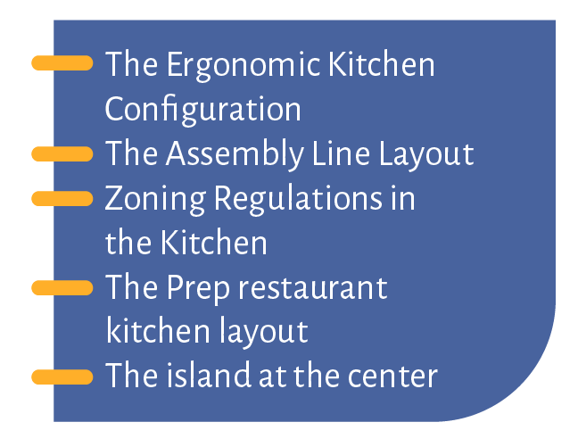

4. Read the definition and write on the line the name of the kitchen concept.

With an island at the center of the kitchen, chefs congregate in the same area and handoffs from sous chef to cook to expo are smooth. This design also helps executive chefs supervise the entire menu creation process, as they can easily walk around the island.
All restaurants have kitchens with different areas for different tasks, or zones. Servers are responsible for exposing their own food, and many courses need to be made across a variety of different stations. These designs might require multiple KDS (kitchen display systems) for each prep or cook station, or routing based on service area.
Popular among quick service and fast casual restaurants like Chipotle, the assembly line layout allows customers to customize their meal as they go. The assembly line layout often has an area off to the side for the "back of house" to prep while "front of house" employees serve. They often require employees to pay at the end of the line on a customer-facing tablet
Prep-line style kitchens emphasize the importance of food preparation with many different prep stations for different meals.
While you need to consider the flow of inventory to the kitchen, you also need to consider the flow of employees throughout the kitchen. This configuration features separate work and traffic aisles, minimizing accidents.